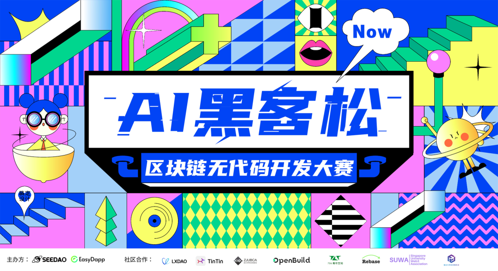
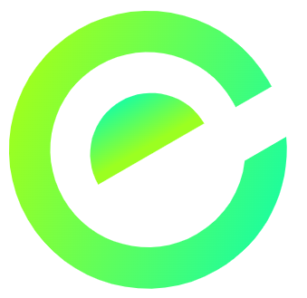
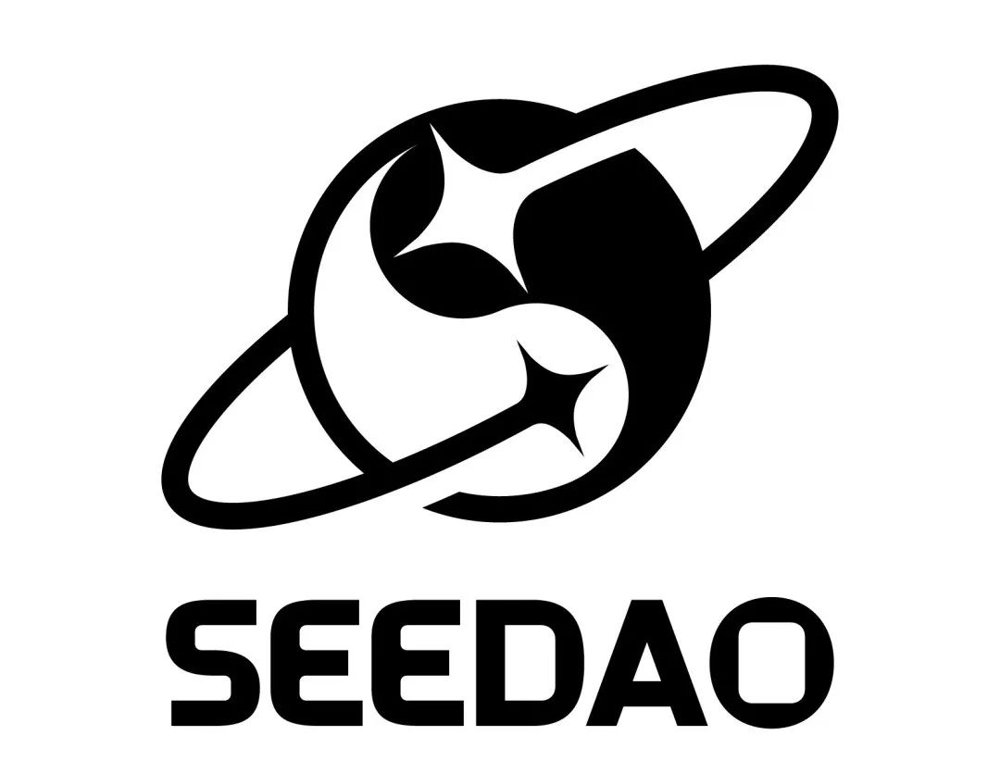

图：SNS jingyi & Jessie

新的一年，你是否想过能够快速开发自己的区块链应用，而不需要复杂的编程技能？
现在，这个梦想触手可及！我们诚邀所有区块链爱好者加入 AI助力无代码编程黑客松，让你在无需编写代码的情况下，轻松实现自己的DApp创意！
✨ 赛事亮点
AI助力无代码工具：通过先进的AI技术和无代码平台，你可以用最直观的方式构建功能丰富的DApp应用，真正实现“零编程”开发。
区块链与智能合约入门：即使你没有编程基础，我们的导师也会带你快速上手，了解区块链的核心概念和智能合约的基本操作。
实时协作与创新：与来自全球的区块链爱好者一同交流与合作，在黑客松的环境中互相启发，共同创新。
奖金与机会：第一名获得2000U现金大奖，并有机会展示给行业领军人物和投资者！
👫 适合人群：
资深链上开发者，希望提高工作效率
区块链爱好者，想要了解无代码开发的朋友
设计师、产品经理、创意工作者，想要将创意转化为实际应用
对DApp开发感兴趣，想要跳出传统编码限制的人
💫 参赛流程：
| ⚙️注册 | 1.1-1.19 |
|---|---|
| 🔗提交 | 1.1-1.19 |
| 🗳️评审 | 1.20 |
| ✨公布获奖名单 | 1.21 |
| 😃分发奖金 | 1.21 |
⚙️ 主办方：

EasyDapp 是下一代无代码区块链应用开发平台，通过直观的拖拽工作流和 AI 智能辅助，快速构建功能完善的多链 DApp（目前支持ETH，IC），并可立即分享使用。平台旨在大幅降低区块链应用开发的门槛，将复杂的多栈技术简化，实现高效开发，助力开发效率提升 90% 以上。

SeeDAO：一个基于区块链的数字城邦，其表现形态为去中心化的数字网络和映射在全球各地的物理据点，由 SeeDAO 成员共建、共治、共享。SeeDAO 所追求的意义指向 — 基于区块链构建一个以追求“好的生活”为目的的社会，成员在其中共在、涌现、逍遥。
📝 报名：
参赛选手请添加小助手进入参赛群：
另，社区在圣诞节发布的「为你写歌」第一首《吻时间的手》新人小伙伴 ricky.seedao共创MV demo；Seed Forever共创元旦动图，与大家分享
相关故事：原创｜社区圣诞曲目《吻时间的手》